V1.0.x Baseline Maintenance + UX Polish 自动化验收报告
结论：PASS
声明：V1.0.x baseline maintenance and scoped UX polish passed regression acceptance.
证据根目录：docs/active/project/evidence/v1_baseline_maintenance_ux_polish
目标架构与当前实现
本阶段保持 V1 分层：Host Page -> contentBridge/pageContext -> in-page launcher/sidebar -> sidepanel React -> runtimeClient -> Local Runtime A/C/D。BM/UX 只做基线维护和 scoped UX polish，不新增 Runtime public contract。
prototype review 是设计输入，不是实现截图；本报告用真实运行截图逐项映射。
关键指标
truebuildPassed
truepostV1ValidatorPassed
okruntimeHealthStatus
truesensitiveInfoScanPassed
18screenshotSamples
9prototypeTargets
9prototypeTargetsCovered
0fatalIssues
0majorIssues
Prototype Review 到真实截图映射
| 目标 | 状态 | 截图 | 说明 |
|---|---|---|---|
| default launcher | covered | screenshots/launcher-01-docked-default.png | Collapsed docked launcher state. |
| hover / focus | covered | screenshots/launcher-02-launcher-hover-peek.png | Launcher hover/focus visual feedback. |
| expanded sidebar | covered | screenshots/launcher-03-expanded-after-click.png | In-page sidebar expanded by launcher click. |
| Chat | covered | screenshots/launcher-03-expanded-after-click.png | Sidepanel shell keeps Chat reachable. |
| Mindmap | covered | screenshots/launcher-03-expanded-after-click.png | Mindmap / Reading Map visual regression sample. |
| Source Evidence | covered | screenshots/launcher-03-expanded-after-click.png | Source evidence state remains visually inspectable. |
| Debug | covered | screenshots/launcher-03-expanded-after-click.png | Debug entry remains part of sidepanel shell. |
| Settings | covered | screenshots/launcher-03-expanded-after-click.png | Settings entry remains part of sidepanel shell. |
| offline diagnostics | documented | n/a | Runtime offline diagnostics must remain visible in UI; verified by report and PRD review, not claimed as visual sample if no offline screenshot is present. |
{kind=link}
{kind=link}
{kind=link}
测试命令
| 命令 | 结果 | 退出码 |
|---|---|---|
npm --prefix apps/chrome-extension run build | PASS | 0 |
npm --prefix apps/chrome-extension run validate:post-v1-hardening | PASS | 0 |
curl --noproxy '*' -sS http://127.0.0.1:17861/v1/health | PASS | 0 |
BM/UX evidence sensitive information scan | PASS | 0 |
git diff --check | PASS | 0 |
python3 -m xml.etree.ElementTree docs/active/project/design/v1-baseline-maintenance-ux-polish-gap.drawio | PASS | 0 |
drawio page count <= 8 | PASS | 0 |
截图证据
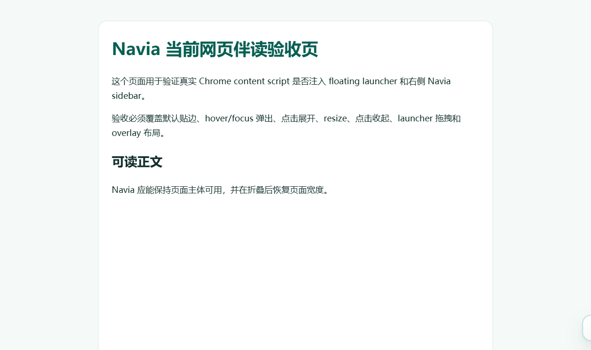
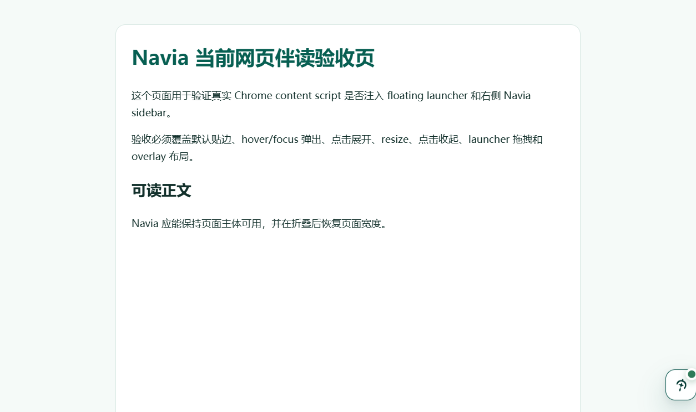
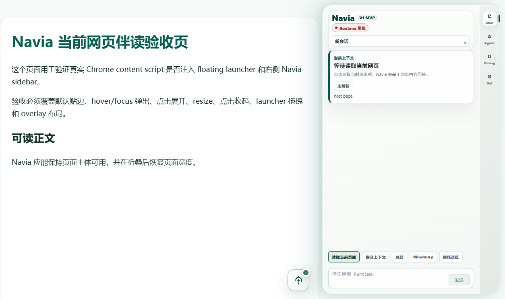
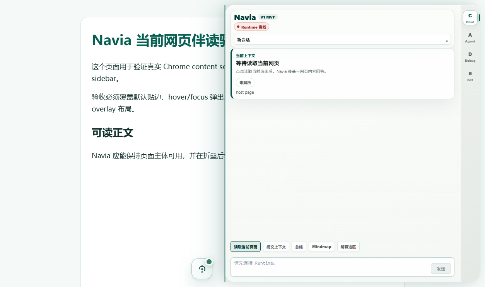
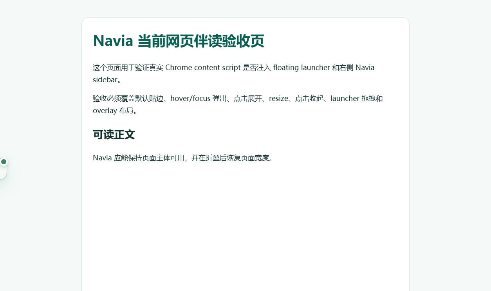
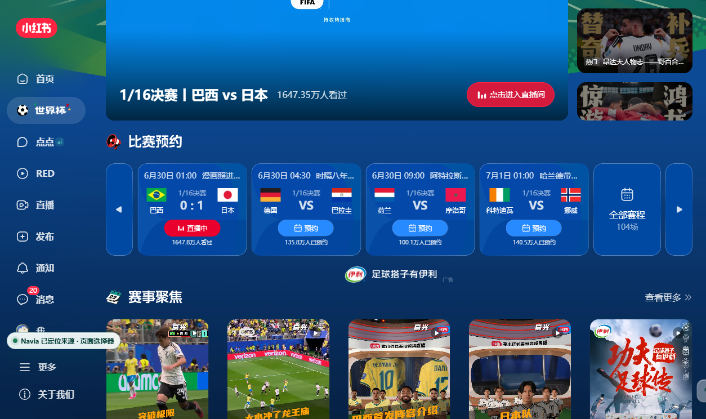
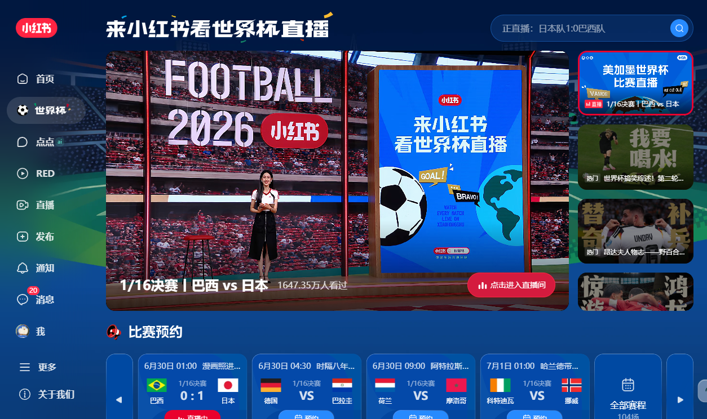

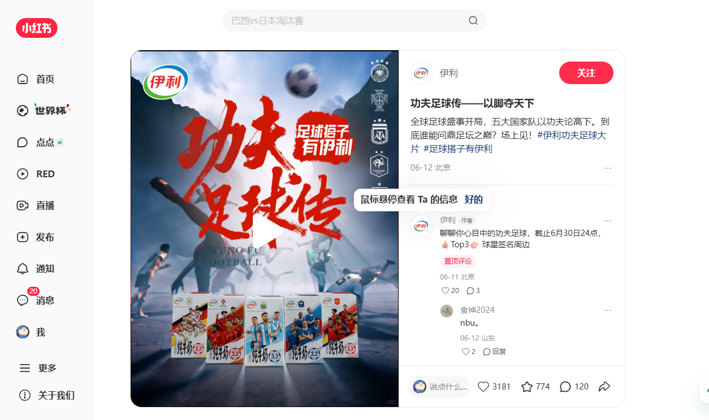

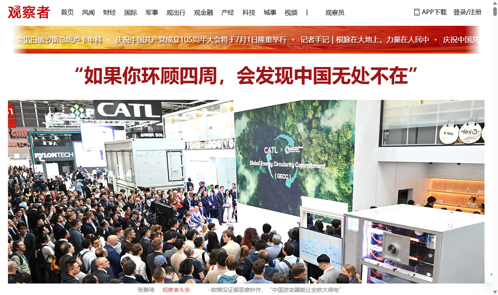
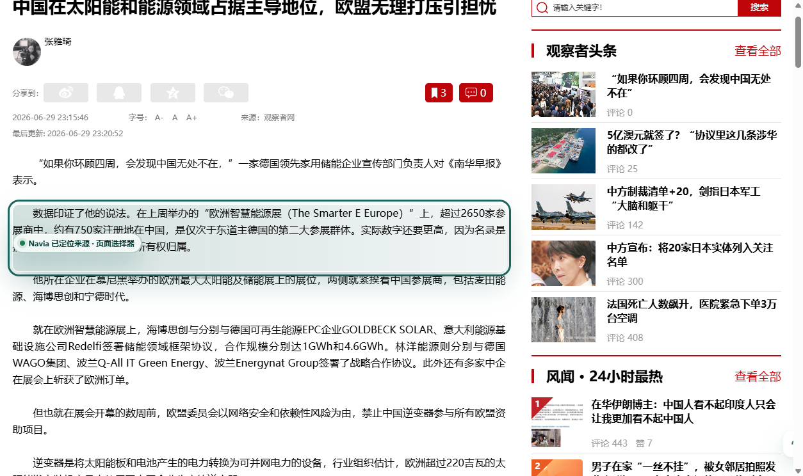
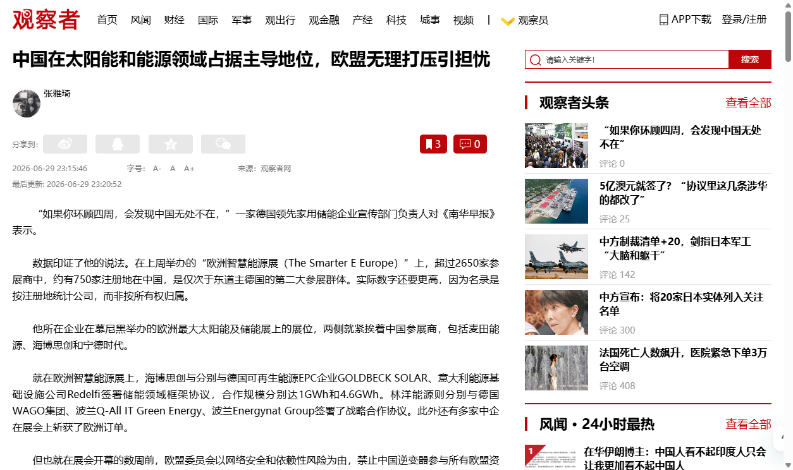
PRD / False-Green 边界
- 不重写
docs/active/project/evidence/v1_post_v1_hardeningfrozen baseline。 - 不声明最终 Monica-like UX complete。
- fallback_shown / blocked 不冒充 located。
- 自动化报告不冒充人工 spot-check。